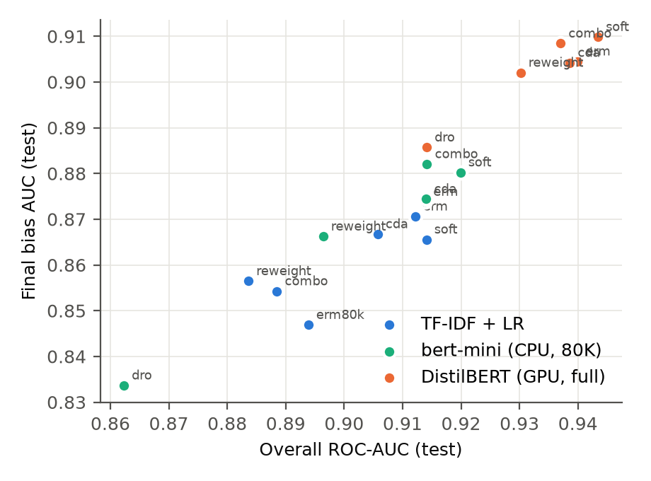

Measuring and mitigating identity bias in a toxicity moderation workbench
Can we cut identity-term errors without losing accuracy, and can a tool help a moderator see when a flag rests on an identity word?
Petros Taxiarchis · COSC 72
A TF-IDF baseline on Civil Comments, P(toxic):
“I am a gay man”
0.86
“I am a straight man”
0.04
“She is a black woman”
0.996
Content warning: examples contain offensive language from real news comments.
Data
445K news comments with 8 identity-mention flags. Standard splits; any train or val text that also appears in test is removed.
Soft labels: each comment’s share of raters who called it toxic (median 4 raters).
Three model families
TF-IDF + logistic regression on 267K comments.
bert-mini on a laptop CPU, 80K comments.
DistilBERT on the Dartmouth GPU cluster, full data, 3 seeds.
Four mitigations, all families
Swap identity terms in training copies; upweight rare identity × label groups; minimise the worst group’s loss; train on rater fractions. Plus a combo fixed in advance.
Evaluation
Threshold and temperature from validation only. Subgroup / BPSN / BNSP AUC, FPR gap, worst-group accuracy, calibration, held-out identity templates, and identity swaps of real test comments.
Fair-Mod · Methods
| Test set, 133K | AUC | Bias AUC | Worst grp | FPR gap |
|---|---|---|---|---|
| TF-IDF ERM | 0.912 | 0.871 | 0.51 | 0.103 |
| DistilBERT ERM | 0.940 | 0.905 | 0.58 | 0.075 |
| + soft labels | 0.943 | 0.909 | 0.62 | 0.078 |
| + CDA | 0.939 | 0.905 | 0.60 | 0.072 |
| + reweight | 0.930 | 0.902 | 0.48 | 0.023 |
| + group DRO | 0.914 | 0.887 | 0.35 | 0.029 |
| + combo | 0.937 | 0.909 | 0.56 | 0.034 |
DistilBERT rows: mean of 3 seeds (AUC s.d. ≤ 0.001, worst-group s.d. ≈ 0.03). FPR gap: mean |identity FPR − background FPR|.

Fair-Mod · Results
92%
of DistilBERT’s missed toxic comments had raters split 30–70%. Errors live where people disagree.
19%
of neutral identity sentences (“I’m proud to be gay.”) flagged by DistilBERT ERM. Reweighting: 3.5%, DRO: 0%.
0.038 → 0.012
Score change under identity swaps after CDA. On identity words it never swapped, no gain (0.088 → 0.094).
56% → 64%
Confident identity false positives with an identity word in the top 3 integrated-gradients words: ERM → soft labels.
Hand-coding 200 errors: a harmless identity mention causes 28 of 100 false positives; missed toxic comments are mostly implicit hostility (30) or sarcasm (13). Some confident “false positives” are label noise: “You are a NASTY WOMAN”, toxic to only 32% of 65 raters.
Fair-Mod · Error analysis
1
A stronger encoder on more data removes more identity bias than any mitigation on a weaker model.
2
Soft labels raise AUC in every model family, with accuracy within 0.01 of ERM. Closing the false-positive gap (reweight, DRO) means missing more attacks on the same groups. Which error to accept is a policy choice.
3
So the tool defers instead of deciding: calibrated scores, a defer band, word attributions and an identity-swap table, shown live in the demo.
Limits: mentions, not authors; 8 coarse groups; labels from ~4 raters; one coder for the hand-coded errors.
Next: per-rater labels; context-aware swaps; group-aware thresholds; longer inputs; a second dataset.
Fair-Mod · Code, results and demo video in the project repository